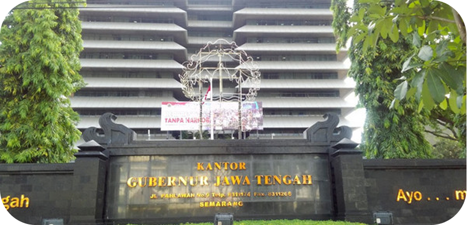

Tentang Biro
Biro Otonomi Daerah dan Kerjasama Provinsi Jawa Tengah merupakan perangkat daerah yang memiliki tugas dalam menyusun kebijakan, melaksanakan koordinasi, serta memfasilitasi pelaksanaan otonomi daerah dan kerjasama daerah, baik di dalam maupun luar negeri.
Visi
“Terwujudnya Jawa Tengah yang maju, sejahtera, dan berdaya saing melalui tata kelola pemerintah yang kolaboratif.”
Misi
- Meningkatkan Layanan Dasar yang Inklusif
- Meningkatkan Pertumbuhan Perekonomian Perkotaan
- Mewujudkan Tata Kelola Pemerintahan yang Responsif dan Kolaboratif
- Mewujudkan Pembangunan Infrastruktur Jawa Tengah yang merata
- Menjaga Stabilitas dan Kondusivitas Daerah dengan pendekatan budaya lokal
- Menjaga iklim Investasi yang kondusif dan kolaboratif
Tugas dan Fungsi
Biro Otonomi Daerah dan Kerjasama mempunyai tugas melaksanakan penyiapan perumusan kebijakan pelaksanaan koordinasi, serta pemantauan dan evaluasi di bidang otonomi daerah dan kerjasama.
Fungsi utama meliputi:
- Perumusan kebijakan teknis di bidang otonomi daerah dan kerjasama.
- Pelaksanaan koordinasi dengan perangkat daerah dan instansi terkait.
- Pemantauan, evaluasi, dan pelaporan pelaksanaan program dan kegiatan.
- Pelaksanaan administrasi biro.